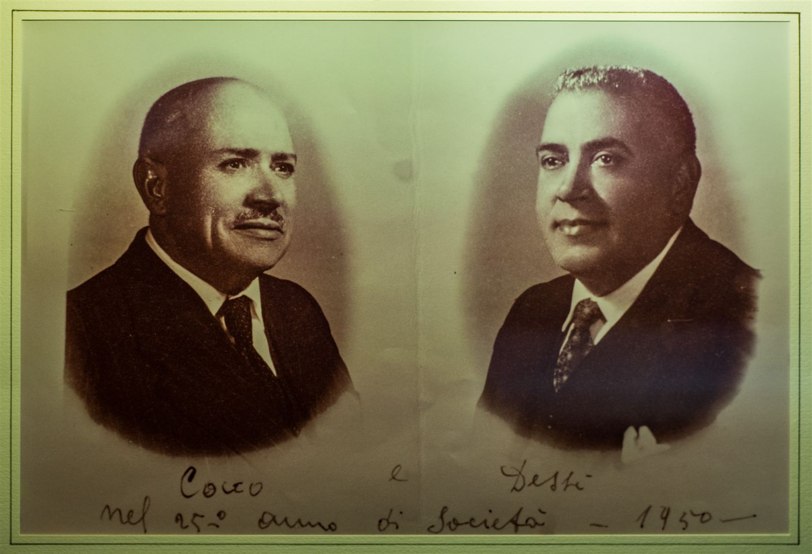
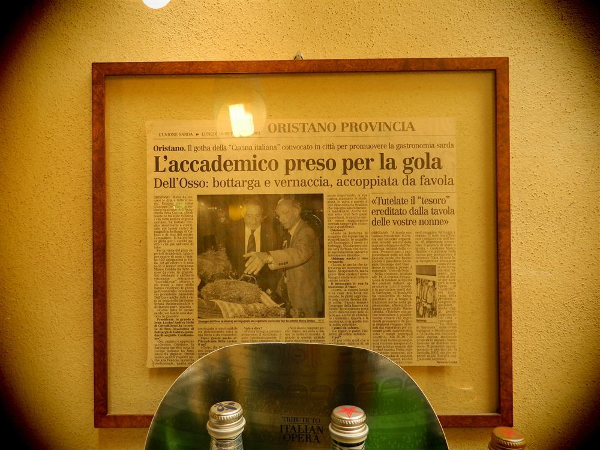
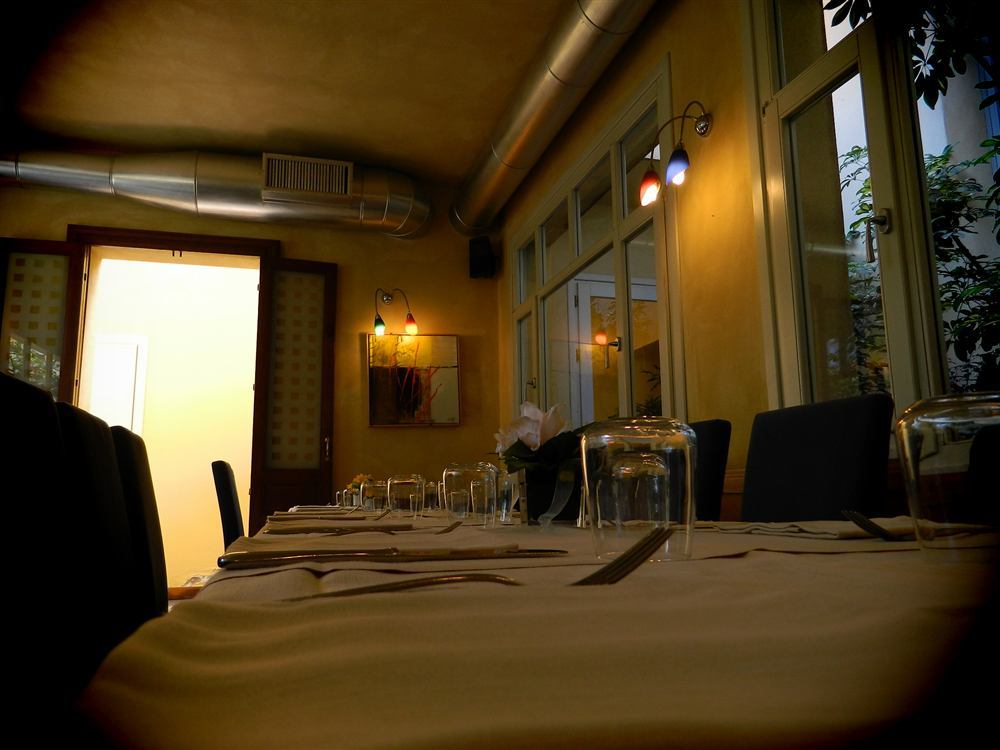
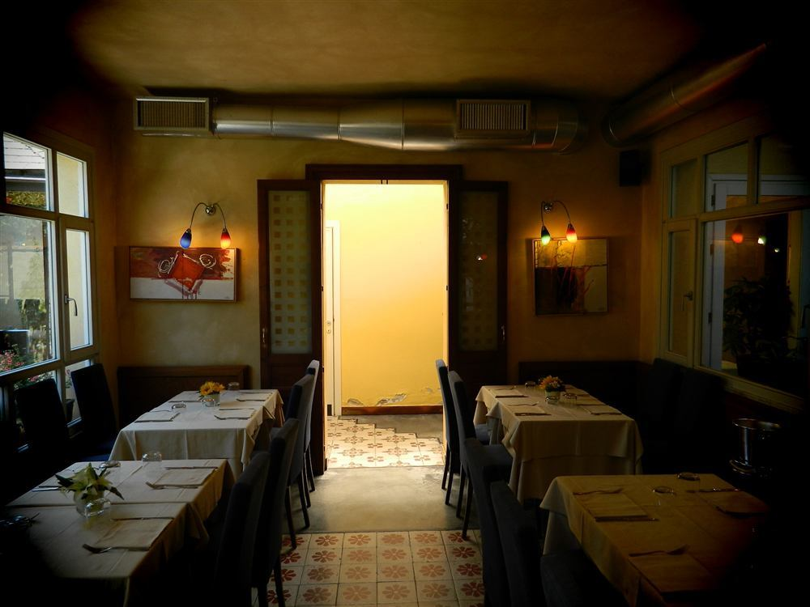
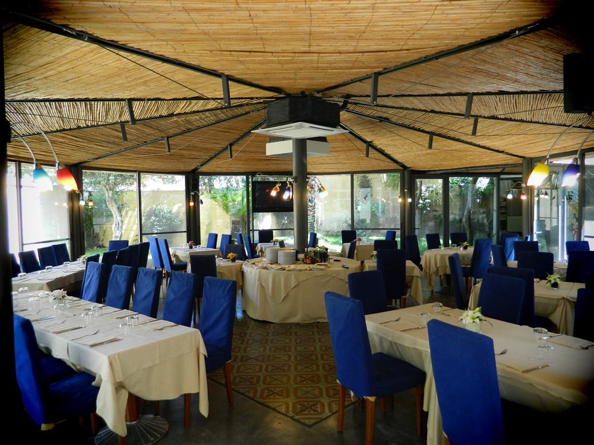
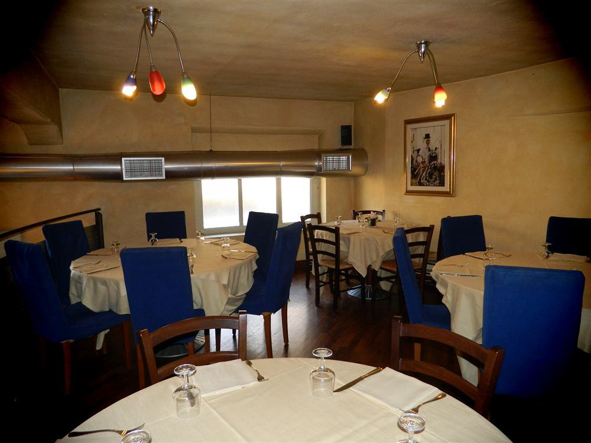
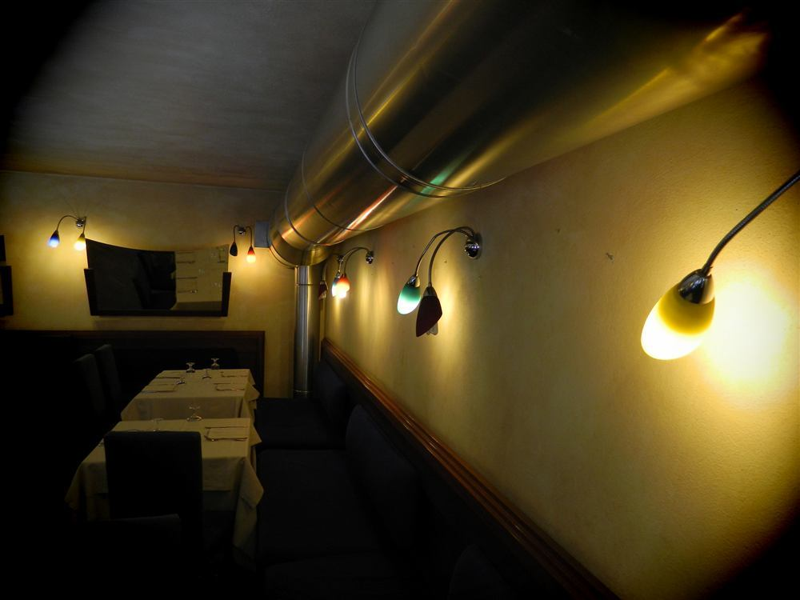
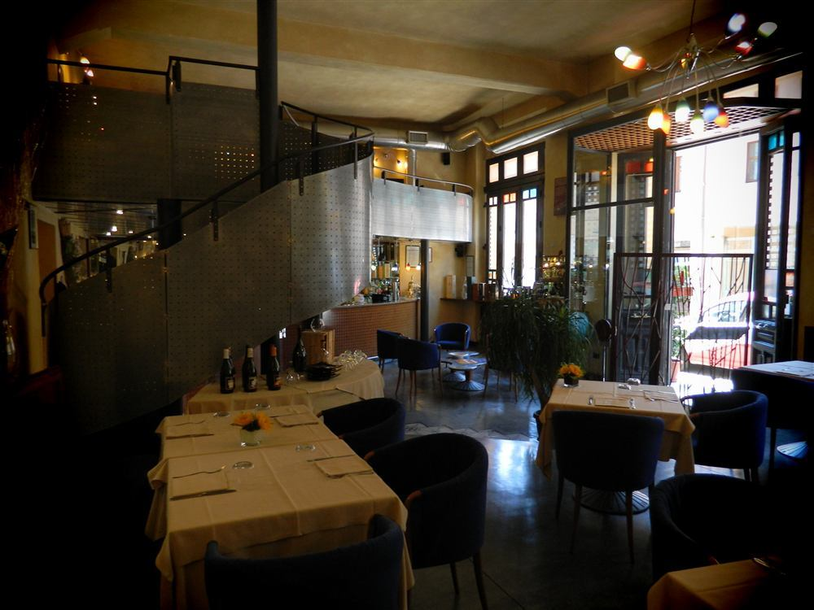
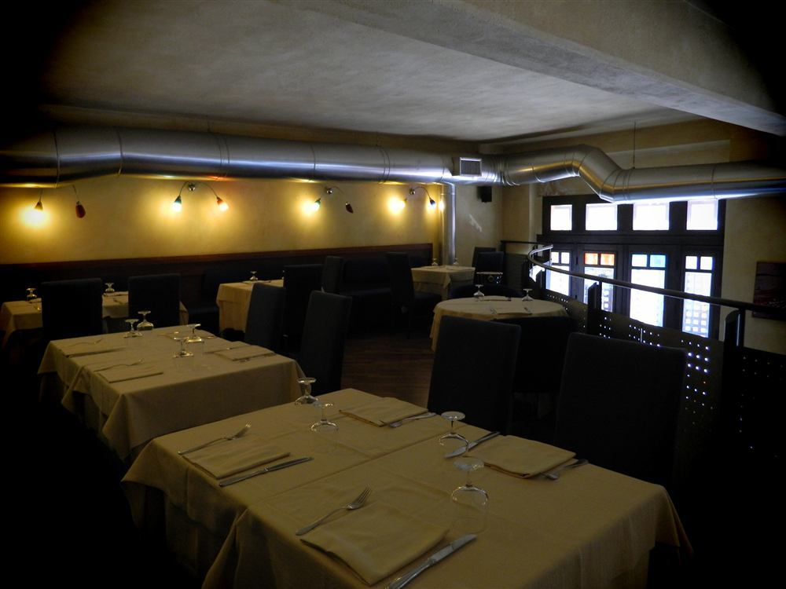
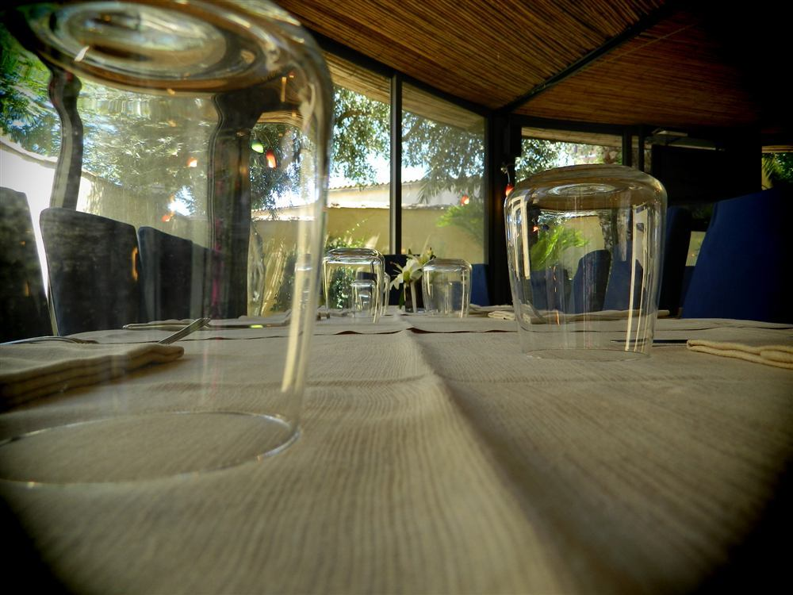

Ristorante · Pizzeria — Oristano
Il Loggiato
Dal 1925, nel cuore del centro storico. Cucina di mare e di terra, più di quaranta pizze, i vini migliori dell'isola.
Aperti 7 giorni su 7 · 12 mesi l'anno
Un secolo di passione
Portiamo lo stesso nome dei soci che nel 1925 lo crearono.
Dal 1929 la nostra casa è Palazzo del Loggiato, elegante palazzo storico ristrutturato a pochi passi da Piazza del Popolo, con sale riservate e l'ampio gazebo del cortile interno. Per noi la ristorazione non è un lavoro: è un'arte che portiamo avanti con serietà e dedizione, riconosciuta dall'Accademia Italiana della Cucina.
In cucina lo Chef Lorenzo Melis e il Secondo Chef Davide Serra; al forno i pizzaioli Marco Pintus e Andrea Mura. Pane e pasta artigianali, fatti ogni giorno da noi.
I soci Efisio Melis e Gavino Serra fondano il ristorante nell'edificio della famiglia Piras, in Piazza del Popolo.
L'ingresso a Palazzo del Loggiato: sale eleganti, gazebo nel cortile interno, ospiti da tutta l'isola.
La gestione Melis & Serra porta avanti la tradizione, tra pesce del mercato locale e pizze artigianali.

Carta dei vini
Una cantina da esplorare
Le migliori produzioni delle cantine della Sardegna e non solo: dalla Vernaccia di Oristano al Cannonau, dal Carignano del Sulcis al Vermentino di Gallura. Sfoglia la selezione per categoria.
- CorashCannonau di Sardegna DOC RiservaCantina della Vernaccia
- MaimoneCannonau di Sardegna DOCCantina della Vernaccia
- Monti PramaNieddera IGT Valle del TirsoCantina della Vernaccia
- MaluentuNieddera IGT Valle del TirsoCantina Contini
- SartigliaCannonau di Sardegna DOCCantina Contini
- Rocca RubiaCarignano del Sulcis DOC RiservaCantine Santadi
- Terre BruneCarignano del Sulcis DOC SuperioreCantine Santadi
- CosteraCannonau di Sardegna DOCArgiolas
- TurrigaIGT Isola dei NuraghiArgiolas
- Buio BuioCarignano del Sulcis DOC RiservaCantina Mesa
- Capichera LiantiCarignano IGT Isola dei NuraghiCapichera
- Nepente di OlienaCannonau di Sardegna DOCCantina di Oliena
- MamuthoneCannonau di Sardegna DOCSedilesu
- KiriCannonau di Sardegna DOCCantina del Vermentino di Monti
- BenasVermentino di Sardegna DOCCantine della Vernaccia
- Is ArutasVermentino di Sardegna DOCCantine della Vernaccia
- Terre SinisIGT Valle del Tirso BiancoCantine della Vernaccia
- Karmis CuvéeIGT Tharros BiancoCantina Contini
- MamaioaVermentino biologico IGTCantina Contini
- TyrsosVermentino di Sardegna DOCCantina Contini
- PuisterisSemidano di Mogoro DOC SuperioreCantina Il Nuraghe
- CostamolinoVermentino di Sardegna DOCArgiolas
- StellatoVermentino di Sardegna DOCCantina Pala
- AghilojaVermentino di Gallura DOCG SuperioreCantina del Vermentino di Monti
- Funtanaliras OroVermentino di Gallura DOCGCantina del Vermentino di Monti
- CanayliVermentino di Gallura DOCG SuperioreCantina Sociale della Gallura
- RuinasVermentino IGT Colli del LimbaraDepperu
- BranuVermentino di Gallura DOCGSurrau
- Capichera Vigna'ngenaVermentino di Gallura DOCGCapichera
- IndolenteVermentino di Sardegna DOCTenuta Asinara
- SeuRosatoCantina della Vernaccia
- Nieddera RosèRosatoCantina Contini
- Filieri RosatoRosatoCantina di Dorgali
- Rosè di AlgheroRosatoTenuta Sella & Mosca
- Vernaccia di Oristanola DOC di casaOristano
La carta completa — inclusi spumanti, Champagne e vini da dessert — è disponibile in sala e al calice ogni sera.
La pellicola
Un giro tra i tavoli
Trascinate la pellicola per scorrere tra le sale e i piatti del nostro ristorante. Clicca su un fotogramma per ingrandirlo.









Dicono di noi
Le vostre parole
Prenotazioni
Vi aspettiamo
Sempre aperti a pranzo e cena, sette giorni su sette, dodici mesi l'anno. Il modo più veloce di prenotare è il telefono.
+39 — una chiamata, tavolo confermato
-
Dove siamo
Piazza del Popolo 5 — 09170 Oristano (OR)
Nel cuore del centro storico di Oristano. -
Scriveteci
-
Orari
Pranzo 12.30 – 14.30
Cena 19.30 – 23.00
Aperti 7 giorni su 7 -
Ideale per
Cene con i vostri cari, serate con gli amici, appuntamenti romantici, pranzi aziendali.